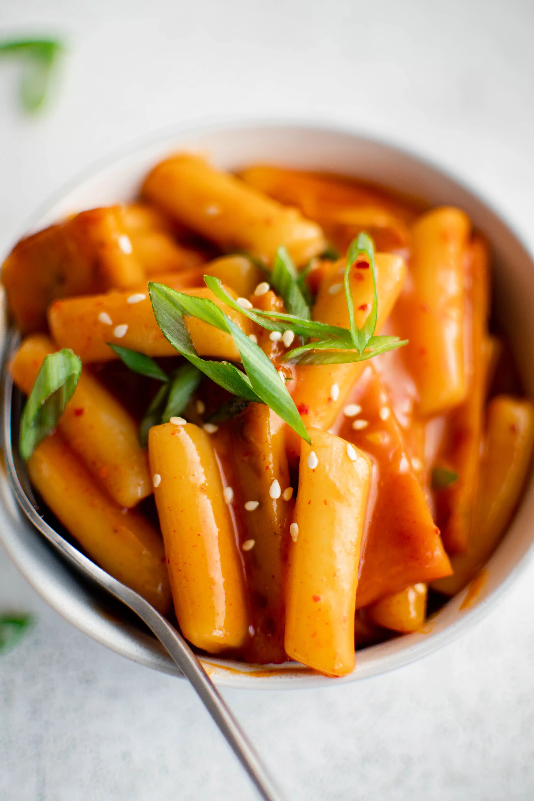

Recipe for Tteokbokki

Description
Tteokbokki is a beloved and iconic Korean street food that tantalizes the taste buds with its spicy, chewy, and satisfying qualities.
This popular snack or comfort food has a rich history and a prominent place in Korean cuisine.
Ingredients
- 1 pound of cylinder shaped rice cake
- 4 cups of water
- 7 large anchovies, with heads and intestines removed
- 6 x 8 inch dried kelp
- 1/3 cup of gochujang
- 1 Tbsp of gochugaru
- 1 Tbsp of sugar
- 3 green onions, cut into 3 inch long pieces
- 2 hard boiled eggs
- 1/2 pound of fish cakes
Steps
- Add the water, dried anchovies, and dried kelp to a shallow pot or pan. Boil for 15 minutes over medium-high heat
- Combine gochujang, gochugaru, and sugar in a small bowl
- Remove the anchovies and kelp from the pot and add the rice cakes, the mixture, green onion, fish cakes, and hard boiled eggs
- Stir gently when it starts to boil. Let it simmer and keep stirring until the rice cake turns soft and the sauce thickens